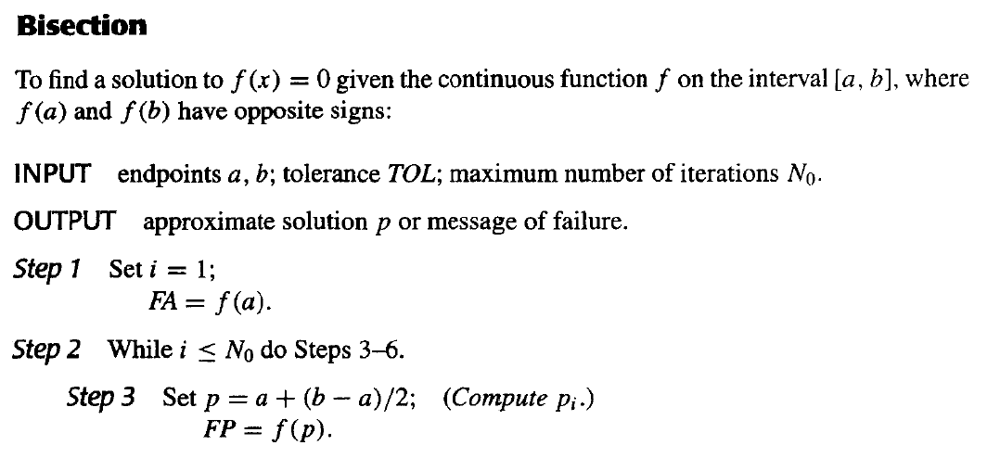
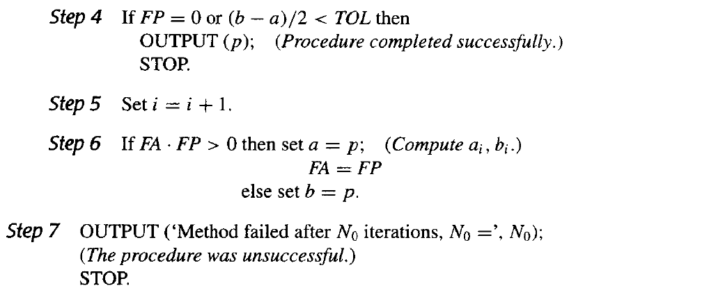
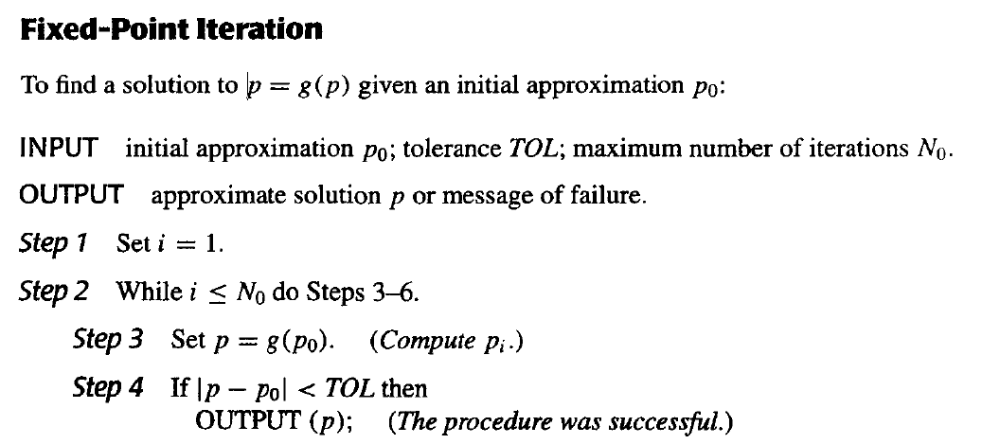
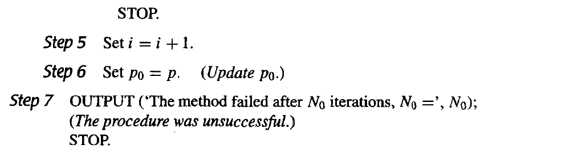
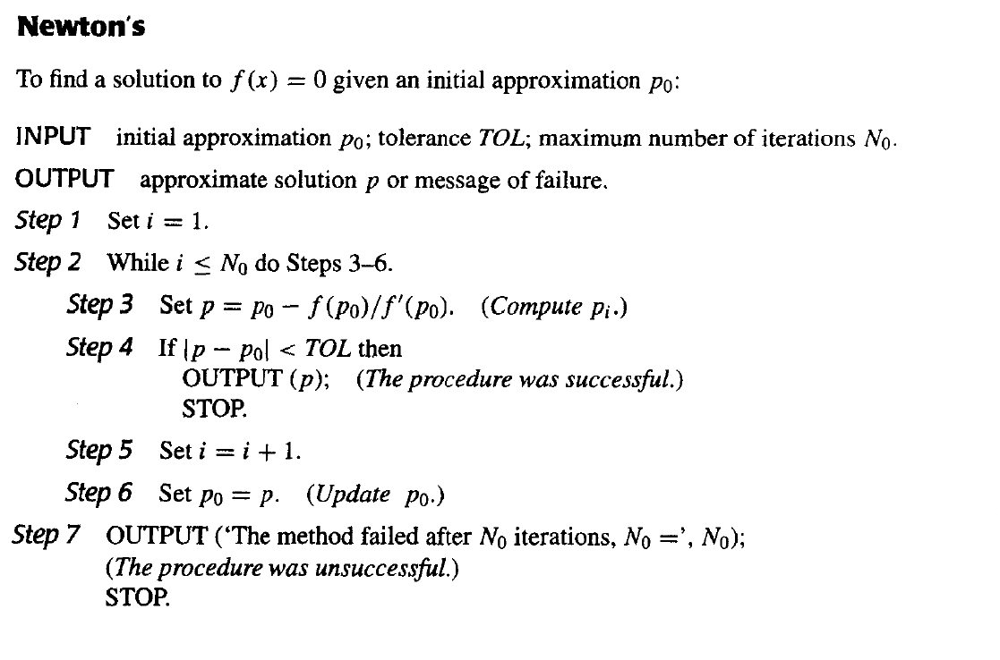
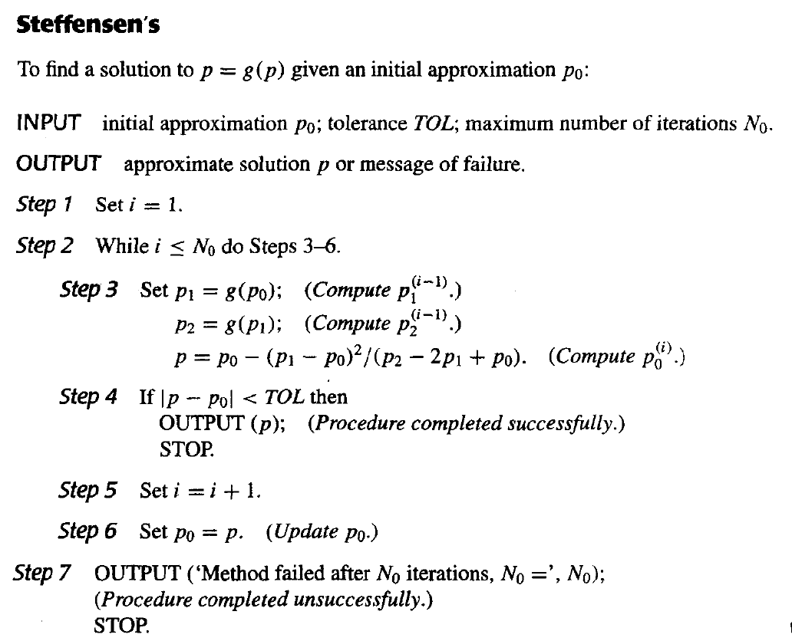

Chapter 2 一元方程求解 Solutions of Equations in One Variable¶
目标：Find a root of \(f(x)=0\).
2.1 终止条件¶
- \(|p_N-p_{N-1}|<\varepsilon\)
- \(\frac{|p_N-p_{N-1}|}{|p_N|}<\varepsilon\)
- \(|f(p_N)|<\varepsilon\)
Note
- 存在\(|p_n-p_{n-1}|\)收敛而\(\{p_n\}\)序列本身发散的情况（如\(p_n=\sum_{k=1}^n\frac{1}{k}\)），使得第一个终止条件失效；
- 存在函数值\(y\)值相差不大，但\(x\)值相去甚远的情况，使得第三个终止条件不靠谱；
- 一般来说第二个终止条件最有效。
2.2 求解方法¶
二分法 The Bisection Method¶
伪代码¶
 
Step3为什么用 \(p=a+\frac{b-a}{2}\) 而不用 \(p=\frac{a+b}{2}\) ？
考虑有效位数时，由于舍入误差，后者的计算结果可能会落到\([a, b]\)外面。
如\(a=0.98,\ b=0.99\)，保留2位有效数字、使用rounding时算出来的中点为\(1.0\).
优缺点¶
优点：
- 算法简单，非常容易理解；
- 只需要满足函数连续的条件；
- 总是能收敛到一个解。
缺点：
- 收敛速度慢；
- 无法找到重根和复根。
不动点迭代法 Fixed-Point Iteration¶
不动点定理 Fixed-Point Theorem¶
- 如果 \(g\in C[a, b]\)，并且 \(g(x)\in [a, b]\) 对所有 \(x\in [a, b]\) 成立，则 \(g\) 在 \([a, b]\) 上存在不动点。
- 在上一条基础之上，如果 \(g\) 在 \([a, b]\) 上可导，并且存在常数 \(0<k<1\) 使得 \(|g'(x)|\leq k\) 对所有 \(x\in (a, b)\) 成立，则对任何数 \(p_0\in [a, b]\)，迭代序列 \(p_n=g(p_{n-1}),\ n\geq 1\) 收敛于唯一不动点 \(p\in [a, b]\).
证明
需要证明不动点的1.存在性、2.唯一性和序列的3.收敛性。
-
令 \(f(x)=g(x)-x\)，有\(a\leq g(x)\leq b\Rightarrow f(a)\geq 0,\ f(b)\leq 0\)，根据介值定理，\(f\) 的根存在，即 \(g\) 的不动点存在；
-
反证法。假设 \(p\leq q\) 都为 \(g\) 的不动点，则由中值定理，存在 \(\xi\in (p, q)\) 使得 \(g(q)-g(p)=g'(\xi)(q-p)\Rightarrow (1-g'(\xi))(q-p)=0\xRightarrow{|g'(\xi)|\leq k<1\ } p=q\) 矛盾。
-
\(n\rightarrow\infty\) 时，\(|p_n-p|=|g(p_{n-1})-g(p)|=|g'(\xi)||p_{n-1}-p|\leq k|p_{n-1}-p|\leq k^2|p_{n-2}-p|\leq ...\leq k^n|p_0-p|\rightarrow 0\).
满足以上定理后，可由 \(|p_{n+1}-p_n|\geq ||p_n-p|-|p_{n+1}-p||\geq ||p_n-p|-k|p_n-p||=(1-k)|p_n-p|\)，导出推论：
可知 \(k\) 越小，收敛速度越快。当 \(k>\frac{1}{2}\) 时，该方法慢于二分法。
伪代码¶
 
优缺点¶
优点：
- 算法较简单，较易理解。
缺点：
- 不总是能收敛，需满足一定条件；
- 收敛速度较慢。
牛顿迭代法 Newton's Method¶
主要思想是利用泰勒展开将非线性函数线性化。
假设 \(f\in C^2[a, b]\)，\(p_0\) 是一个对 \(f\) 的根 \(p\) 的近似值，且 \(f'(p_0)\neq 0\). 考虑 \(f(x)\) 在 \(p_0\) 处的一阶泰勒展开式：
其中 \(\xi_x\) 在 \(p_0\) 与 \(x\) 之间。
假设 \(p_0\) 与 \(p\) 很接近，即 \(|p-p_0|\) 很小。那么我们可以忽略更小的二次项，得到
得出牛顿迭代法公式
伪代码¶

优缺点¶
优点：
- 收敛速度快。
缺点：
- 对初始点的精度有很大要求，难以知道合适的区间；
- 函数求导有时需要大量计算，会很困难。
\(^*\)割线法 Secant Method¶
原始的牛顿法的变式，回避了函数求导的难题,但收敛速度可能较慢。
由导数定义，\(f'(p_{n-1})=\mathop{lim}\limits_{x\rightarrow p_{n-1}}\frac{f(x)-f(p_{n-1})}{x-p_{n-1}}\).
令 \(x=p_{n-2}\)，得到 \(f'(p_{n-1})\approx\frac{f(p_{n-2})-f(p_{n-1})}{p_{n-2}-p_{n-1}}=\frac{f(p_{n-1})-f(p_{n-2})}{p_{n-1}-p_{n-2}}\).
将上式代入牛顿法公式，得到割线法公式
\(^*\)试位法 Method of False Position¶
在割线法的基础上，保证 \(p_{n-1}\) 和 \(p_{n-2}\) （即相邻项）的函数值符号相反。做法是每次计算出新的 \(p_n\) 后根据符号选择保留 \(p_{n-1}\) 还是 \(p_{n-2}\) 作为区间的另一个端点。
2.3 迭代法误差分析 Error Analysis for Iterative Methods¶
收敛阶数 the order of convergence-
假设 \(\{p_n\}_{n=0}^\infty\) 收敛于 \(p\) 且 \(p_n\neq p\) 对所有 \(n\) 成立。如果存在正常数 \(\lambda\) 和 \(\alpha\) 使得
\[\mathop{lim}\limits_{n\rightarrow\infty}\frac{|p_{n+1}-p|}{|p_n-p|^\alpha}=\lambda\]则称 \(\{p_n\}_{n=0}^\infty\) \(\alpha\) 阶收敛于 \(p\)，\(\lambda\) 称为渐进误差常数。
- 收敛阶数 \(\alpha\) 越大，收敛越快。
- \(\alpha=1\)，称为线性收敛(linearly convergent);
- \(\alpha=2\)，称为二次收敛(quadratically convergent).
Warning
个人补充：线性收敛时，应有 \(0<\lambda<1\).
不动点法 与 牛顿法 的收敛阶数¶
-
当 \(g'(p)\neq 0\) 时，不动点法线性收敛。
-
当 \(f'(p)\neq 0\)（即没有重根）时，牛顿法至少二次收敛。
证明
不动点法：
牛顿法：
- 当 \(g'(p)=0\) 时，若存在 \(\alpha\geq 2\) 使得 \(g\in C^\alpha [p-\delta, p+\delta],\ g'(p)=...=g^{\alpha-1}(p)=0\) 且 \(g^\alpha(p)\neq 0\) ，则不动点法 \(\alpha\) 阶收敛。
证明
由泰勒展开（其实前面用到的中值定理可算作一阶泰勒展开），
- 若 \(f\) 有 \(m\) 重根，则牛顿法线性收敛。
证明
有 \(f(x)=(x-p)^mq(x),\ q(p)\neq 0\). 借用不动点法的分析方式，牛顿法其实就是 \(p_n=g(p_{n-1})\)，其中 \(g(x)=x-\frac{f(x)}{f'(x)}\). 有
Note
对牛顿法来说，其实 \(m=1\) 时 \(g'(p)=0\)（即 \(k=0\)），也可以证明单根情况下牛顿法至少二次收敛。
优化牛顿迭代法 处理重根情况¶
利用函数变换将重根转换为单根，加速传统牛顿法，达到二次收敛。
令
有 \(\footnotesize{\mu(x)=\frac{(x-p)^mq(x)}{m(x-p)^{m-1}q(x)+(x-p)^mq'(x)}=(x-p)\frac{q(x)}{mq(x)+(x-p)q'(x)}}\)，可知 \(p\) 是 \(\mu\) 的单根。直接将传统牛顿法应用于 \(\mu\):
\(g(x)=x-\frac{\mu(x)}{\mu'(x)}=x-\frac{f(x)f'(x)}{[f'(x)]^2-f(x)f''(x)}\)$
得到优化牛顿迭代法公式
优缺点¶
优点：
- 二次收敛
缺点：
- 需要额外计算 \(f''(x)\)；
- 分母为两个都很接近 \(0\) 的数之差，容易产生较大的误差。
2.4 加速收敛 Accelerating Convergence¶
Aitken's \(\Delta^2\) Method¶
假设 \(\{p_n\}_{n=0}^\infty\) 线性收敛于 \(p\). 方便起见，不妨假定 \(p_n-p\)、\(p_{n+1}-p\)、\(p_{n+2}-p\) 符号相同，且 \(n\) 足够大。
此时我们有
解得
Warning
此处必有分母 \(p_{n+2}-2p_{n+1}+p_n\neq 0\)，否则 \(p_{n+2}-p_{n+1}=p_{n+1}-p_n\Rightarrow\lambda=1\)，序列不收敛。
定义前向差分(forward difference) \(\Delta p_n=p_{n+1}-p_n,\ \Delta^kp_n=\Delta(\Delta^{k-1}p_n)\)，则Aitken's \(\Delta^2\) Method公式可以写作
可以证明，\(\{\hat{p}_n\}_{n=0}^\infty\) 比 \(\{p_n\}_{n=0}^\infty\) 收敛得更快。（实际计算时，仍是算一步 \(p_n\)，算一步 \(\hat{p}_{n-2}\)）
证明
即证 \(\mathop{lim}\limits_{n\rightarrow\infty}\cfrac{\hat{p}_n-p}{p_n-p}=0\).
令 \(e_n=p_n-p\)，则 \(\mathop{lim}\limits_{n\rightarrow\infty}\frac{e_{n+2}}{e_{n+1}}=\mathop{lim}\limits_{n\rightarrow\infty}\frac{e_{n+1}}{e_n}=c\)，有
则
Steffensen's Method¶
将 Aitken's \(\Delta^2\) Method 应用于不动点迭代法，并做一些适当的改变，可将其加速至二次收敛（证明似乎较复杂，略），即为 Steffensen's Method.
原始的 Aitken's \(\Delta^2\) Method 计算过程如下：
而 Steffensens' Method 认为 \(\hat{p_0}\) 是比 \(p_2\) 更好的近似值，所以用 \(\hat{p}_0\) 代替 \(p_2\) 作为下一次迭代的自变量。计算过程如下：
伪代码¶
